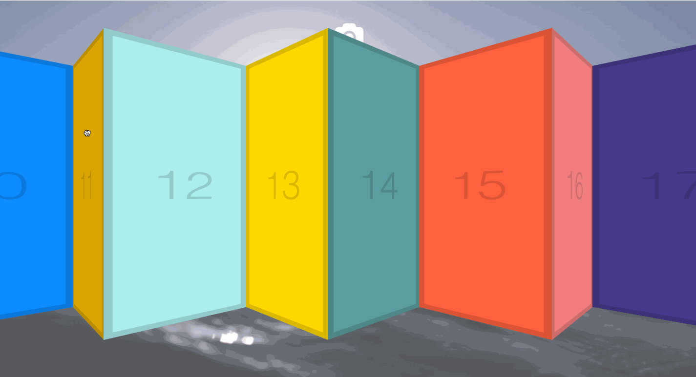

在Github上看到了wesbos的一个Javascript30天挑战的repo，旨在使用纯Js来进行练习，不允许使用任何其他的库和框架，该挑战共30天，我会在这里记录下自己练习的过程和遇到的问题。

第27天的练习是一个鼠标点击并进行拖拽的效果，详见👆动画。
源码
// javascript |
<!-- 部分CSS --> |
部分代码解析
- 鼠标松开或者离开容器，
mouseleave为当鼠标移出该容器是会触发。item.addEventListener('mouseleave', () => {
isDown = false;
item.classList.remove('active');
});
item.addEventListener('mouseup', () => {
isDown = false;
item.classList.remove('active');
});
将鼠标是否按下的标志位设置为false，并移除该容器的激活类名。
事件模型中并没有鼠标点击拖拽的事件，因此我们需要将多个事件配合使用以达到鼠标点击拖拽的效果，就是使用
mousedown和mousemove事件配合，提前声明一个鼠标是否按下的标志，当鼠标按下的时候设置为true，在鼠标标志为真的时候再执行具体的点击拖拽的逻辑。要实现鼠标点击拖拽的功能肯定要知道鼠标点击拖拽的距离，这个距离可以通过首先记录鼠标点击的位置和鼠标滑动时的位置相减得到，即源码中的
let walkX = (x - startX) * 3;这里加上乘三或者乘小数，可以控制鼠标点击拖拽的灵敏度。要得到鼠标当前点相对于容器的左边的水平距离可以用
e.pageX - item.offsetLeft来求得，这里e.pageX是当前点相对于浏览器左边框的距离，item.offsetLeft是当前容器相对于浏览器左边框的距离，两者相减即可得到鼠标当前点相对于容器的左边的水平距离。这里还要提前记录该容器在水平方向上的滚动距离
scrollLeft = item.scrollLeft;，这样当鼠标在容器中移动的时候会计算出鼠标移动的距离，之后再动态的更新该容器的水平滚动距离，item.scrollLeft = scrollLeft - walkX;，用之前的水平滚动距离减去当前的水平滚动距离。这里的
e.preventDefault();是为了阻止默认事件，在这里的默认事件其实主要是指，鼠标点击滑动时对文本的选中等。鼠标点击后的小动画的原理如下：将该容器元素的缩放比例由0.98放大到1,
scale(1);；再修改鼠标点击时的鼠标样式为grabbing（一个抓着的小手状）；再加上transition: all 0.2s;就可以有动画的效果了。
END! 💯